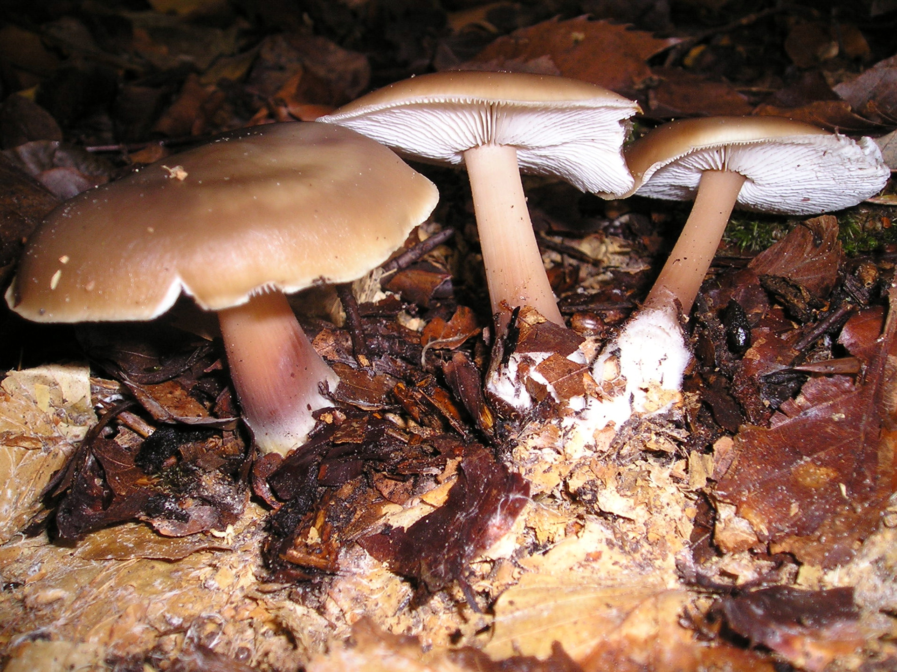

Денежка
Денежка, колли́бия (лат. Collybia) — род грибов семейства Рядовковые (Tricholomataceae).Денежки съедобные (или опёнки весенние) названы так из-за шляпок в форме монеты, а отличаются от опят настоящих утлой структурой и отсутствием ободка на ножке. Диаметр 2-12 см., форма — от полушаровидной до выпуклой и распростертой; у старых экземпляров края нередко загибаются вверх. Поверхность гладкая, в сырую погоду — блестящая, маслянистая. Окраска шляпки очень изменчива: в зависимости от погоды и от возраста гриба она может быть и шоколадно-коричневой, и оливково-бурой, и желто-коричневой, с характерной зональностью, свойственной гигрофанным грибам. |
 |
Распространение и сезонность
Денежки (коллибии) - довольно распространённые грибы умеренной зоны Северного полушария, типичны в Евразии, Северной Америке. Распространены коллибии и в лесах средней полосы России, за Уралом, в Сибири или на Дальнем Востоке (в Приморском крае). Растут денежки, в основном, во влажных хвойных и лиственных лесах, на лесном опаде, почве с хвойной подстилкой, на старых пнях и валежнике, на деревьях (погибших и погибающих, независимо хвойных или лиственных), но не как разрушители, а как грибы-сапрофиты, обычно дружно, большими группами. Массовое созревание некоторых грибов-денежек начинается уже в самом начале мая (за что их называют "весенними опятами") и продолжается по декабрь, легко перенося заморозки.